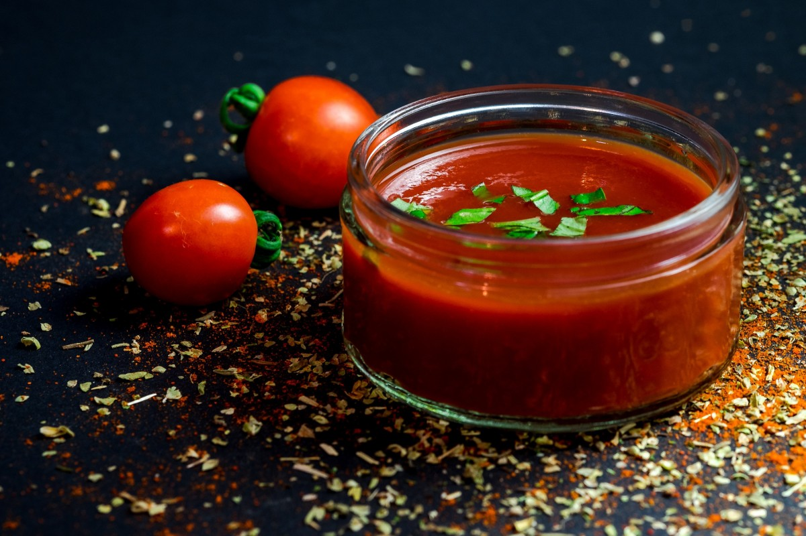
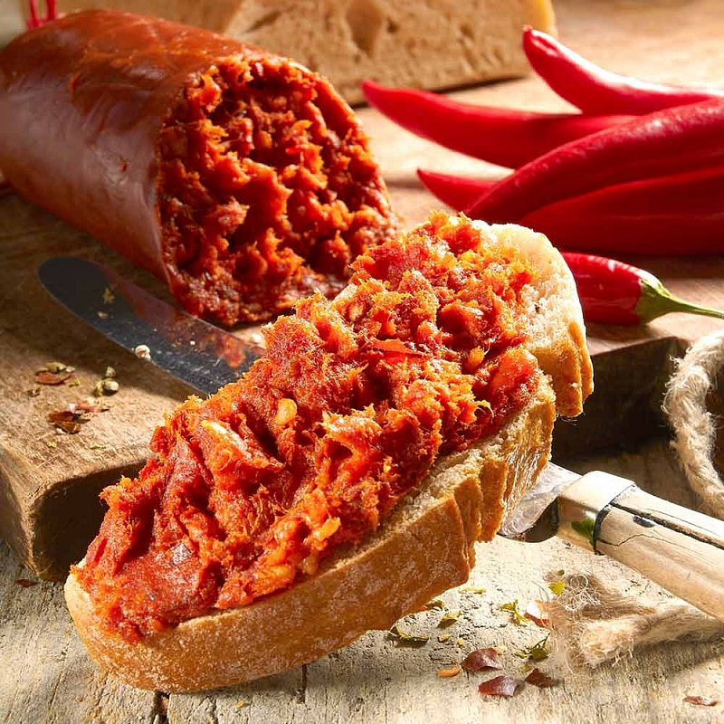

Molho de tomate orgânico! Transforme suas receitas com o sabor autêntico do nosso molho de tomate orgânico e leve para casa hoje mesmo o nosso produto.
200g por apenas R$20,00
E-mail para contato: maria.vitoriade.oliveira15@escola.pr.gov.br


Ingredientes:
1 vidro de molho de tomate da Oliveira
2 pimentas dedo de moça
1 colher de chá de açúcar
1/2 xícara de chá de água
Modo de preparo:
Pique as pimentas em fatias pequenas, adicione todos os ingredientes em uma panela, ligue em fogo baixo e deixe até ferver. Após levantar fervura, aumente o fogo e deixe por 2 minutos. Despeje o patê em um recipinte e deixe esfriar em temperatura ambiente. PRONTO!! Sirva com fatias de pão e delicie-se com nosso patê.
Rendimento: porção de 200g servindo até 10 pessoas.